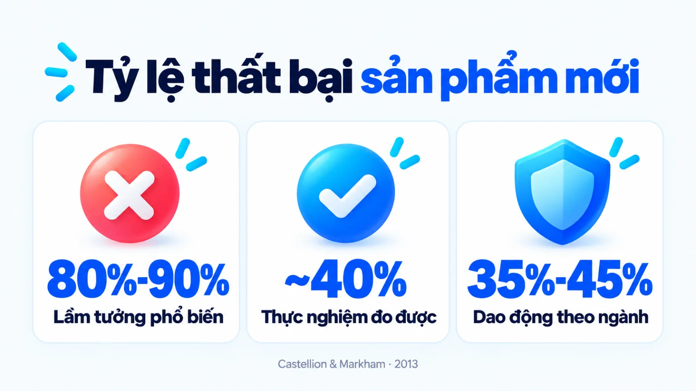
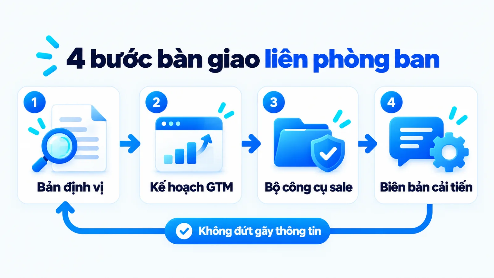
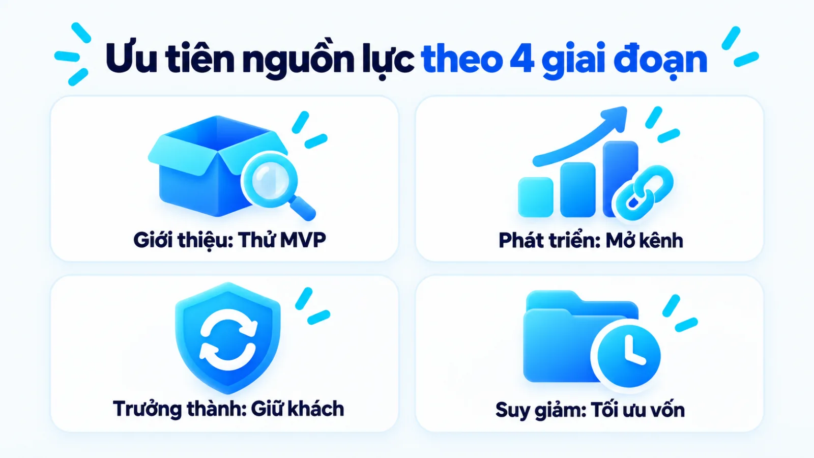
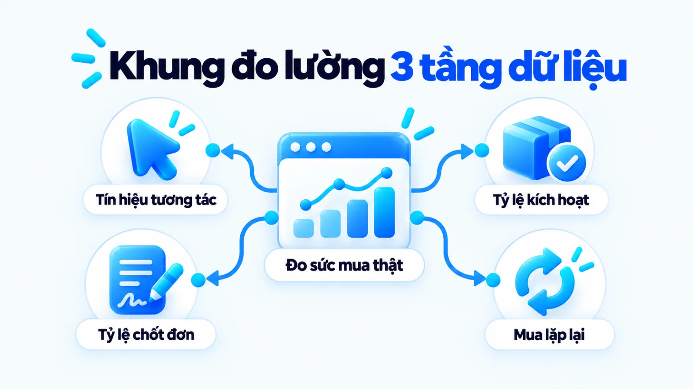

Chiến lược cho sản phẩm mới là gì và cách lập
Chiến lược cho sản phẩm mới là hệ thống các quyết định quản trị từ thẩm định nhu cầu, định vị phân khúc, lập kế hoạch tiếp cận thị trường đến trang bị công cụ bán hàng nhằm chuyển sản phẩm vừa hoàn thiện thành doanh thu lặp lại. Trong thực tế, nhiều doanh nghiệp dồn ngân sách vào sự kiện mở bán ngắn hạn nhưng doanh số chững lại ngay khi hết ưu đãi, vì đội tư vấn thiếu tài liệu xử lý từ chối và sản phẩm chưa kịp điều chỉnh theo rào cản sử dụng thật. Khi quản trị lộ trình thương mại hóa như một chuỗi quyết định xuyên suốt vòng đời, người phụ trách mới kiểm soát được điều kiện đầu vào, tài liệu bàn giao liên phòng ban và ngưỡng phân bổ nguồn lực. Tôi là Lê Tuấn Việt, Marketing Leader tại TAKI Group. Trong bài viết này, tôi làm rõ ranh giới giữa chiến lược sản phẩm với kế hoạch ra mắt, quy trình bốn bước triển khai và cách đo lường sức mua bền vững.
- Đăng ngày
- Cập nhật

Tóm tắt nhanh
- Chiến lược cho sản phẩm mới quản trị toàn bộ chu kỳ từ thẩm định nhu cầu, định vị, mở bán thử nghiệm đến duy trì sức mua lặp lại, tách biệt hoàn toàn với chiến dịch ra mắt ngắn hạn.
- Doanh nghiệp vừa và nhỏ chỉ nên thương mại hóa diện rộng khi đã vượt qua ba bộ lọc: kiểm thử phiên bản khả dụng tối thiểu, khóa đơn vị kinh tế học và trang bị kịch bản xử lý từ chối cho đội bán hàng.
- Quy trình bốn bước lập chiến lược chỉ vận hành thông suốt khi mỗi bước kết thúc bằng một tài liệu bàn giao cụ thể giữa bộ phận Sản phẩm, Marketing và Kinh doanh.
- Đánh giá hiệu quả sản phẩm mới phải tách bạch ba tầng từ tương tác truyền thông, tỷ lệ kích hoạt và chấp nhận sản phẩm đến tỷ lệ thắng đơn cùng chi phí thu hút khách hàng.
Mục lục bài viết8 phần
Chiến lược cho sản phẩm mới là gì và phạm vi
Chiến lược cho sản phẩm mới là hệ thống các quyết định quản trị từ định vị phân khúc, thiết kế kế hoạch đưa sản phẩm ra thị trường (Go-to-Market, viết tắt là GTM), trang bị công cụ bán hàng đến thu thập phản hồi cải tiến nhằm chuyển một sản phẩm vừa hoàn thiện thành nguồn doanh thu lặp lại.
Khác với bản mô tả công việc cá nhân của một nhân sự phụ trách sản phẩm hay một sự kiện công bố ngắn hạn, chiến lược marketing cho sản phẩm mới giải quyết bài toán thương mại hóa xuyên suốt vòng đời. Phạm vi của chiến lược này bắt đầu từ lúc sản phẩm còn là bản thử nghiệm, đi qua giai đoạn thâm nhập thị trường, mở rộng kênh phân phối cho đến khi tối ưu lợi nhuận hoặc thu hẹp đầu tư.

Nhiều người làm nghề thường truyền tai nhau con số 80% đến 90% sản phẩm mới thất bại để lý giải rủi ro thị trường. Tuy nhiên, nghiên cứu tổng thuật công bố năm 2013 trên tạp chí Journal of Product Innovation Management của George Castellion và Stephen K. Markham khi rà soát dữ liệu giai đoạn 1977 đến 2004 chỉ ra tỷ lệ thất bại thực tế ở mức khoảng 40%.
Cũng trong công trình này, khảo sát đa ngành của Hiệp hội Quản lý và Phát triển Sản phẩm (PDMA) ghi nhận tỷ lệ thất bại dao động từ 35% đến 45% tùy lĩnh vực, trong đó nhóm hàng công nghiệp và chăm sóc sức khỏe có mức thất bại thấp hơn hàng tiêu dùng nhanh.
Số liệu thực nghiệm trên chỉ ra rằng gần hai phần ba sản phẩm mới vẫn trụ lại được nếu doanh nghiệp chuẩn bị kỹ khâu khớp nối nhu cầu và tổ chức thực thi. Rủi ro thương mại hóa không nằm ở lời đồn định mệnh của thị trường, mà nằm ở việc tung sản phẩm khi chưa kiểm tra đủ các điều kiện nền tảng. Giới hạn của nghiên cứu này là dữ liệu tổng hợp từ các doanh nghiệp quốc tế, nên khi áp dụng tại Việt Nam, các SME (doanh nghiệp vừa và nhỏ) cần kiểm soát chặt hơn dòng tiền thử nghiệm ngắn hạn.
Ba điều kiện cần kiểm tra trước khi thương mại hóa
Trước khi ký duyệt ngân sách truyền thông diện rộng, người phụ trách cần rà soát ba điều kiện đầu vào đóng vai trò như chốt chặn an toàn dưới đây:
- Đã kiểm thử phiên bản khả dụng tối thiểu: Sản phẩm đã có MVP (phiên bản khả dụng tối thiểu) được một nhóm khách hàng thật sử dụng và xác nhận giải quyết được vấn đề cốt lõi, không còn lỗi làm đứt gãy trải nghiệm.
- Đã khóa rõ đơn vị kinh tế học: Doanh nghiệp đã tính được giá vốn, biên lợi nhuận gộp và mức trần chi phí thu hút một khách hàng mà dòng tiền có thể chịu đựng trong giai đoạn đầu.
- Đội bán hàng đã nắm kịch bản xử lý từ chối: Nhân sự tư vấn hiểu rõ sản phẩm dành cho ai, không dành cho ai và có sẵn tài liệu trả lời các băn khoăn về giá hoặc so sánh với giải pháp cũ.
Tại các doanh nghiệp nhỏ chưa có phòng Product Marketing (tiếp thị sản phẩm) riêng, chủ doanh nghiệp hoặc Marketing Leader cần trực tiếp cầm trịch việc kiểm tra ba điều kiện này. Tôi ưu tiên dừng mở rộng ngân sách quảng cáo ngay khi thấy sản phẩm có nhiều lượt hỏi mua nhưng tỷ lệ dùng thử thành công thấp, vì đổ thêm tiền lúc đó chỉ làm nhiều người biết đến một sản phẩm chưa sẵn sàng.
Phân biệt chiến lược sản phẩm và kế hoạch ra mắt
Chiến lược marketing cho sản phẩm mới quản trị toàn bộ chu kỳ từ thẩm định nhu cầu, định vị, mở bán đến duy trì sức mua lặp lại, trong khi chiến dịch ra mắt (Launch Campaign) chỉ là hoạt động truyền thông ngắn hạn tại thời điểm công bố sản phẩm. Việc gộp chung hai khái niệm này khiến nhiều đội ngũ tiêu cạn nguồn lực ngay tuần đầu mở bán.
Theo tài liệu chuyên môn cập nhật năm 2024 của Gartner, một kế hoạch Go-to-Market đòi hỏi sự phối hợp đồng bộ giữa định giá, kênh bán hàng, hành trình mua và thông điệp để thuyết phục khách hàng lựa chọn sản phẩm. Để đặt đúng vai trò của từng công cụ trong kế hoạch marketing tổng thể và tránh nhầm lẫn với các chiến thuật marketing ngắn hạn, bảng dưới đây đối chiếu chiến lược sản phẩm mới với chiến dịch ra mắt theo năm tiêu chí.
| Tiêu chí đối chiếu | Chiến lược cho sản phẩm mới | Chiến dịch ra mắt ngắn hạn |
|---|---|---|
| Mục tiêu trọng tâm | Xác lập vị thế, tạo doanh thu lặp lại và mở rộng thị phần bền vững | Tạo sự chú ý, thu hút lượt dùng thử và đơn hàng trong đợt công bố |
| Khung thời gian | Xuyên suốt vòng đời sản phẩm từ lúc thử nghiệm đến khi suy giảm | Ngắn hạn từ vài tuần đến một quý quanh mốc mở bán chính thức |
| Phạm vi phối hợp | Liên phòng ban gồm Sản phẩm, Marketing, Bán hàng và Chăm sóc khách | Chủ yếu nằm ở bộ phận truyền thông, sự kiện và quảng cáo |
| Tài liệu bàn giao | Bản định vị, khung GTM, bộ công cụ bán hàng và biên bản cải tiến | Kế hoạch truyền thông sự kiện, lịch đăng bài và mẫu quảng cáo |
| Thước đo thành công | Tỷ lệ chấp nhận sản phẩm, tỷ lệ thắng đơn và chi phí thu hút khách | Lượt tiếp cận, lượng người tham dự sự kiện và số đơn đợt đầu |
Bảng đối chiếu trên áp dụng cho cả sản phẩm vật lý lẫn dịch vụ hoặc phần mềm, nhưng cần điều chỉnh độ dài kỳ đo theo chu kỳ mua hàng của từng ngành. Một chiến dịch mở bán rầm rộ có thể tạo ra lượng truy cập lớn trong vài ngày, song nếu thiếu lớp chiến lược giữ chân và hỗ trợ bán hàng phía sau, doanh nghiệp sẽ phải mua lại từng đơn hàng bằng khuyến mãi. Sự kiện chỉ tạo điểm bùng, chiến lược mới giữ nhịp mua.
Quy trình 4 bước lập chiến lược cho sản phẩm mới
Quy trình lập chiến lược cho sản phẩm mới gồm bốn bước nối tiếp nhau theo chuỗi quyết định: thẩm định nhu cầu và định vị, thiết kế khung Go-to-Market, trang bị bộ công cụ bán hàng và mở bán thử nghiệm để cải tiến. Mỗi bước bắt buộc kết thúc bằng một tài liệu bàn giao cụ thể giữa Sản phẩm, Marketing và Bán hàng.

Bước 1: Thẩm định nhu cầu và định vị phân khúc
Đội ngũ xác định rõ nhóm khách hàng có nỗi đau cấp bách nhất sẵn sàng chi tiền sớm, đồng thời phân tích đối thủ trực tiếp (cùng giải pháp) và đối thủ gián tiếp (khách dùng cách thủ công cũ để tự giải quyết). Điểm nghẽn thường gặp ở bước này là chọn phân khúc quá rộng vì sợ bỏ sót khách, khiến thông điệp ở bước tiếp theo bị loãng và không thuyết phục được nhóm mua đầu tiên.
Đầu ra: Bản định vị sản phẩm (Product Positioning Document) nêu rõ phân khúc ưu tiên, vấn đề cốt lõi, điểm khác biệt kiểm chứng được và ranh giới nhóm khách hàng không phục vụ.
Bước 2: Thiết kế thông điệp và khung Go-to-Market
Người phụ trách chuyển hóa các thông số kỹ thuật từ Bản định vị thành ma trận Điểm đau, Tính năng và Lợi ích thực tế, sau đó chọn kênh phân phối cùng cấu trúc giá phù hợp với hành vi mua. Khi sử dụng kênh trả phí để tiếp cận nhóm mua sớm, bạn cần khớp ngân sách thử nghiệm với kế hoạch chạy quảng cáo Facebook hoặc kênh tìm kiếm tương ứng để kiểm soát chi phí ngay từ đầu.
Đầu ra: Kế hoạch Go-to-Market (GTM Plan) quy định rõ ma trận thông điệp theo từng nhóm người mua, bảng giá, kênh tiếp cận chủ lực và ngân sách thử nghiệm.
Bước 3: Chuẩn bị bộ công cụ cho đội ngũ bán hàng
Theo định nghĩa trong từ điển thuật ngữ năm 2024 của Gartner, Sales Enablement (trang bị năng lực bán hàng) là quy trình cung cấp thông tin, nội dung và công cụ giúp đội ngũ kinh doanh tư vấn và chốt đơn hiệu quả hơn. Đây là điểm nghẽn thường bị các SME bỏ quên nhất: phòng marketing chạy quảng cáo thu khách tiềm năng về, nhưng nhân sự sale lại tư vấn tự phát vì không có tài liệu chuẩn hóa.
Đầu ra: Bộ công cụ Sales Enablement gồm bài giới thiệu ngắn (Sales Deck), bảng đối chiếu cạnh tranh (Battlecard), câu hỏi lọc nhu cầu và kịch bản xử lý từ chối.
Bước 4: Mở bán thử nghiệm và thu thập phản hồi
Doanh nghiệp triển khai mở bán trên một tệp khách hàng giới hạn để kiểm tra thông điệp, quy trình giao nhận và khả năng kích hoạt giá trị sử dụng thực tế trước khi nhân rộng ngân sách. Sai lầm phổ biến ở bước này là chỉ đếm số đơn mở bán mà bỏ qua việc ghi nhận lý do khách từ chối cùng những thao tác gây lúng túng làm người mua bỏ cuộc sớm.
Đầu ra: Biên bản cải tiến sản phẩm và điều chỉnh thông điệp sau kỳ thử nghiệm, có chữ ký xác nhận của cả đại diện Sản phẩm, Marketing và Bán hàng.
Cách ưu tiên nguồn lực theo giai đoạn vòng đời
Ở mỗi giai đoạn trong vòng đời sản phẩm từ Giới thiệu, Phát triển, Trưởng thành đến Suy giảm, doanh nghiệp cần dịch chuyển trọng tâm từ kiểm chứng mức độ chấp nhận sang mở rộng kênh phân phối, tối ưu chi phí giữ chân và quyết định thu hẹp đầu tư. Giữ nguyên một cách chia ngân sách cho mọi giai đoạn sẽ làm lệch hiệu quả sử dụng vốn.
Khi nguồn lực hạn hẹp, chủ doanh nghiệp cần đặt quyết định phân bổ ngân sách của sản phẩm vào tổng thể chiến lược digital marketing để không làm hụt dòng tiền của các sản phẩm đang nuôi sống công ty. Bảng ma trận dưới đây tóm lược trọng tâm chiến lược và nguyên tắc phân bổ nguồn lực qua bốn giai đoạn vòng đời sản phẩm.
| Giai đoạn vòng đời | Trọng tâm chiến lược và chỉ số | Quyết định phân bổ ngân sách |
|---|---|---|
| Giới thiệu | Kiểm chứng nhu cầu, tối ưu tỷ lệ kích hoạt và lấy phản hồi từ nhóm mua sớm | Giới hạn ở ngân sách thử nghiệm, ưu tiên làm bộ công cụ bán hàng và mẫu thử |
| Phát triển | Mở rộng kênh tiếp cận, tăng tỷ lệ chấp nhận sản phẩm và độ phủ điểm bán | Tăng ngân sách thu hút khách mới khi chi phí trên mỗi đơn nằm trong ngưỡng lãi |
| Trưởng thành | Bảo vệ thị phần, khai thác bán chéo và duy trì tần suất mua lặp lại | Chuyển trọng tâm ngân sách sang chăm sóc khách cũ và tối ưu biên lợi nhuận |
| Suy giảm | Thu hoạch dòng tiền còn lại, cắt giảm biến phí và điều hướng sang mẫu mới | Cắt ngân sách quảng cáo tìm khách mới, chỉ giữ chi phí duy trì tệp trung thành |
Khi áp dụng bảng trên, thứ tự ưu tiên còn phụ thuộc vào mô hình kinh doanh. Khởi nghiệp phần mềm cần dồn lực ở giai đoạn Giới thiệu cho kiểm thử MVP và trải nghiệm kích hoạt; ngành hàng tiêu dùng nhanh như cách triển khai trong chiến lược marketing của Cocoon lại cần ưu tiên độ phủ điểm bán và mua lặp lại ở giai đoạn Phát triển; còn dịch vụ B2B (doanh nghiệp bán cho doanh nghiệp) phải đầu tư sớm vào bộ tài liệu Sales Enablement để rút ngắn chu kỳ chốt đơn.

Ba sai lầm làm lệch chiến lược cho sản phẩm mới
Ba sai lầm phổ biến nhất khiến chiến lược cho sản phẩm mới hụt hơi sau đợt mở bán gồm: dồn cạn ngân sách vào sự kiện ra mắt khi chưa có công cụ bán hàng, truyền thông liệt kê tính năng kỹ thuật thay vì giải quyết điểm đau, và mở rộng quảng cáo khi chưa kiểm chứng tỷ lệ sử dụng lặp lại.
Vậy tại sao nhiều đội ngũ dù biết rõ lý thuyết vẫn liên tục vướng vào ba bẫy này khi bắt tay vào thực thi? Nguyên nhân thường nằm ở áp lực phải có số đơn hàng báo cáo ngay trong tuần đầu tiên, khiến người quản lý bỏ qua bước kiểm tra độ khớp giữa lời hứa truyền thông và trải nghiệm thực tế. Ba điểm đứt gãy vận hành cụ thể diễn ra như sau:
- Đốt ngân sách vào lễ ra mắt nhưng bỏ trống Sales Enablement: Doanh nghiệp chi phần lớn vốn cho sự kiện, KOL (người có sức ảnh hưởng) và quảng cáo rầm rộ, nhưng khi khách nhắn tin hỏi sâu về cách dùng thì nhân viên sale trả lời chậm và thiếu nhất quán.
- Truyền thông thông số kỹ thuật thay vì ma trận Điểm đau và Lợi ích: Thay vì viết câu quảng cáo liệt kê cấu tạo như "Phần mềm tích hợp thuật toán đồng bộ đa sàn", đội ngũ cần chuyển thành lợi ích gắn với điểm đau: "Tự động trừ tồn kho trên các sàn ngay khi có đơn, giúp chủ shop không bị phạt hủy đơn" (ví dụ biên tập, không phải kết quả khách hàng thật).
- Nhầm hiệu ứng tò mò đợt đầu với sức mua bền vững: Đợt mở bán đầu tiên thường có đơn hàng từ người quen hoặc khách săn mã giảm giá sâu; nếu vội nhân rộng ngân sách quảng cáo và nhập lô hàng lớn khi chưa đo tỷ lệ quay lại, doanh nghiệp rất dễ đọng vốn.
Ví dụ biên tập, không phải kết quả khách hàng thật
Đối chiếu hai cách phân bổ nguồn lực khi tung dòng thực phẩm bổ sung mới tại SME
Một doanh nghiệp vừa và nhỏ tại Hà Nội chuẩn bị ngân sách tung dòng thực phẩm bổ sung mới. Ở phương án sai, đội ngũ dồn phần lớn vốn cho sự kiện mở bán và quảng cáo diện rộng ngay tuần đầu, thu về nhiều lượt hỏi mua nhưng tỷ lệ chốt đơn rất thấp vì nhân viên tư vấn thiếu tài liệu giải đáp thành phần. Khi điều chỉnh theo quy trình bốn bước, họ trích ngân sách nhỏ ban đầu để hoàn thiện bảng đối chiếu, kịch bản xử lý từ chối và chạy thử trên tệp hẹp, giúp ổn định tỷ lệ chốt đơn trước khi mở rộng quảng cáo.
- Định vị
- Chốt phân khúc mua sớm và ranh giới khách hàng
- Công cụ
- Trang bị bảng đối chiếu và kịch bản tư vấn
- Ngân sách
- Tách pha thử nghiệm nhỏ khỏi pha nhân rộng
Khung chỉ số đo lường và giới hạn đọc dữ liệu
Đo lường chiến lược cho sản phẩm mới cần tách bạch ba tầng dữ liệu gồm: tín hiệu tương tác truyền thông, hành vi chấp nhận sản phẩm như Activation Rate (tỷ lệ kích hoạt) cùng Product Adoption (tỷ lệ chấp nhận sản phẩm), và kết quả doanh thu xác nhận như Win Rate (tỷ lệ thắng đơn) cùng CAC (chi phí thu hút khách hàng).
Theo tài liệu năm 2024 của Amplitude, Activation Rate đo lường tỷ lệ phần trăm người dùng mới hoàn thành thao tác trọng yếu để nhận được giá trị cốt lõi ban đầu. Cũng theo hướng dẫn năm 2024 của Amplitude, Product Adoption phản ánh mức độ người dùng vượt qua giai đoạn dùng thử để sử dụng sản phẩm chủ động và lặp lại. Bảng dưới đây phân tách ba tầng chỉ số kèm giới hạn đọc dữ liệu.
| Tầng chỉ số đo | Cách tính và nguồn dữ liệu | Giới hạn đọc và hướng điều chỉnh |
|---|---|---|
| Tín hiệu tương tác | Tỷ lệ nhấp (CTR), lượt xem trang đích và số người để lại thông tin từ trình quảng cáo | Chỉ phản ánh sức hút của thông điệp mở đầu, chưa chứng minh khách sẵn sàng trả tiền |
| Hành vi chấp nhận | Activation Rate và Product Adoption lấy từ hệ thống theo dõi hành vi hoặc khảo sát sau mua | Tỷ lệ kích hoạt thấp dù nhiều người đăng ký báo hiệu rào cản hướng dẫn sử dụng ban đầu |
| Doanh thu xác nhận | Win Rate của đội sale, CAC và tỷ lệ mua lặp lại lấy từ phần mềm quản trị bán hàng | Cần đọc theo đúng chu kỳ mua hàng, tránh kết luận sớm khi cỡ mẫu đơn hàng còn quá nhỏ |
Khi đọc bảng chỉ số trong giai đoạn đầu sau khi ra mắt, người quản lý cần lưu ý giới hạn quy kết: hiện tượng cháy hàng ở lô sản xuất nhỏ đầu tiên hoặc lượt đăng ký dùng thử tăng vọt do khuyến mãi không đồng nghĩa với việc sản phẩm đã đạt độ khớp thị trường.
Khi đã có dữ liệu hành vi đủ lớn ở tầng chấp nhận sản phẩm, doanh nghiệp có thể kết hợp thêm cá nhân hóa bằng AI để gợi ý cách dùng phù hợp cho từng nhóm khách, nhưng quyết định giữ hay cắt ngân sách vẫn phải bám vào CAC và doanh thu lặp lại.

Câu hỏi thường gặp về chiến lược cho sản phẩm mới
SME chưa có phòng Product Marketing thì ai phụ trách?
Chủ doanh nghiệp hoặc Marketing Leader cần trực tiếp cầm trịch phần định vị và kế hoạch Go-to-Market khi công ty chưa có bộ phận chuyên trách riêng. Trách nhiệm được chia theo tài liệu bàn giao: người nắm sản phẩm cung cấp kết quả thử nghiệm, trưởng nhóm marketing thiết kế thông điệp kèm bộ công cụ tư vấn, còn trưởng nhóm bán hàng cập nhật lý do khách từ chối mỗi tuần.
Khi nào doanh nghiệp chưa nên tung sản phẩm diện rộng?
Doanh nghiệp chưa nên mở bán diện rộng khi vi phạm một trong ba điều kiện: sản phẩm còn lỗi cốt lõi ở giai đoạn dùng thử, chưa tính rõ biên lợi nhuận sau khi trừ chi phí thu hút khách hàng, hoặc đội tư vấn chưa có kịch bản xử lý phản đối. Việc dồn tiền chạy quảng cáo khi trải nghiệm lần đầu chưa trọn vẹn sẽ làm tăng tốc độ rời bỏ và lãng phí ngân sách truyền thông.
Vì sao đợt mở bán đầu hết hàng nhưng doanh số sau đó chững?
Hiện tượng hết hàng đợt đầu thường đến từ quy mô lô hàng nhỏ, sự ủng hộ của khách quen hoặc ưu đãi giảm giá sâu chứ chưa phản ánh sức mua tự nhiên của thị trường. Nếu sản phẩm không giúp người mua nhận được giá trị cốt lõi sớm hoặc thông điệp không chạm đúng nỗi đau của tệp khách hàng rộng hơn, doanh số sẽ rơi tự do ngay khi ngắt khuyến mãi.
Ngân sách thử nghiệm thấp nên chọn kênh tiếp cận nào trước?
Khi ngân sách hạn hẹp, doanh nghiệp nên ưu tiên khai thác tệp khách hàng cũ, mạng lưới đối tác sẵn có hoặc một kênh quảng cáo trả phí nhắm hẹp vào nhóm có nhu cầu cấp bách nhất để lấy phản hồi trực tiếp. Chỉ khi thông điệp bán hàng chứng minh được tỷ lệ chốt đơn và chi phí thu hút khách hàng nằm trong ngưỡng an toàn, đội ngũ mới mở rộng sang kênh đại chúng.
Khi nào cần dừng ngân sách marketing cho sản phẩm suy giảm?
Doanh nghiệp nên thu hẹp hoặc dừng ngân sách tìm khách mới khi chi phí thu hút một khách hàng vượt quá giá trị lợi nhuận người đó mang lại trong nhiều kỳ đo liên tiếp do nhu cầu thị trường dịch chuyển. Ở thời điểm này, nguồn lực cần chuyển sang chăm sóc tệp người dùng hiện hữu để giữ dòng tiền và điều hướng họ sang dòng sản phẩm thay thế.
Chiến lược cho sản phẩm mới B2B khác gì mô hình B2C?
Chiến lược cho sản phẩm mới ở mô hình B2B tập trung vào bộ công cụ hỗ trợ đội bán hàng, bài toán hoàn vốn và tỷ lệ thắng thầu vì quy trình duyệt mua dài và có nhiều người tham gia. Ngược lại, mô hình B2C (doanh nghiệp bán cho người tiêu dùng cá nhân) có quyết định mua nhanh nên ưu tiên tối ưu trải nghiệm dùng thử ngay điểm chạm đầu tiên, độ phủ điểm bán và tần suất mua lặp lại.
Kết luận
Xây dựng chiến lược cho sản phẩm mới hiệu quả đòi hỏi doanh nghiệp chuyển tư duy từ việc tổ chức một đợt mở bán ngắn hạn sang quản trị chuỗi bốn bước có tài liệu bàn giao giữa Sản phẩm, Marketing và Bán hàng, đồng thời đo lường đến tận hành vi sử dụng lặp lại.
Ngay trong tuần này, bạn có thể tự kiểm tra lại sản phẩm sắp tung ra bằng cách đặt ba tài liệu lên bàn làm việc: bản định vị một trang, bảng kịch bản xử lý năm lời từ chối phổ biến nhất cho đội sale và ngưỡng chi phí thu hút một khách hàng tối đa từ biên lợi nhuận.
Khi danh mục sản phẩm mở rộng hoặc tỷ lệ chuyển đổi từ dùng thử sang mua thật bị nghẽn qua nhiều kỳ mà việc sửa lẻ từng mẫu quảng cáo không còn tác dụng, doanh nghiệp sẽ cần một hệ thống hoạch định và kiểm soát đồng bộ hơn.
Bạn có thể tham khảo thêm các khung quản trị trong chuyên mục Quản trị Marketing, hoặc tự hỏi: sản phẩm mới của bạn đang vướng ở khâu định vị thông điệp hay ở khâu trang bị công cụ cho đội ngũ bán hàng?